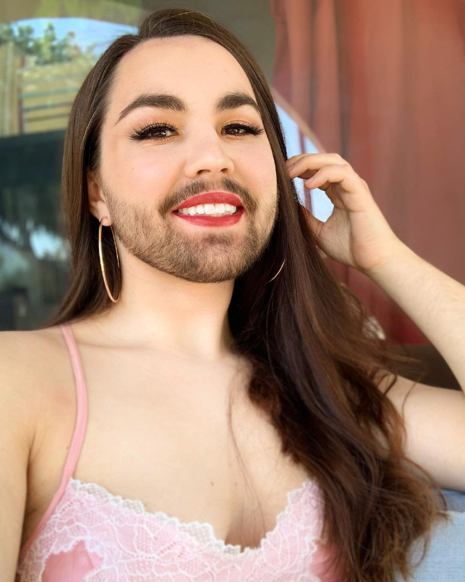
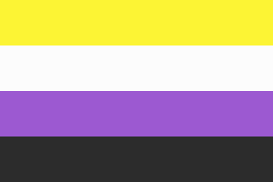

Personalidade
Addison Rose Vincent é uma pessoa não-binária que atende pelos pronomes elu/delu e possui um perfil no Instagram: @breakthebinary que fala sobre o não-binarismo.

Não-binarismo
Topo da página
Bandeira não-binária

Símbolo não-binário
O não-binarismo é o termo que se refere às pessoas que não se encaixam no padrão da binariedade imposto pela sociedade (homem/mulher). Não tem a ver com questões biológicas de gênero, mas sim com a identidade de gênero, ou seja, como uma pessoa se enxerga e assim se expressa na sociedade.
Luta não-binária
Topo da página
A luta não-binária se apresenta para a sociedade como algo novo e muito confuso. No entanto, pessoas não-binárias sempre existiram, só que invizibilizadas. Ter famosos e influencers que afirmam ser quem são e sem medo é algo muito importante para que essa luta continue e assim mais pessoas possam tomar espaços e serem reconhecidas.